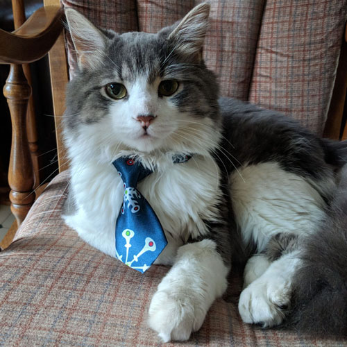

This is our cat, he's a bit of a jerk actually. Or at least he was
when he was younger. He does still have his moments. He likes to climb,
which does not get him in trouble because as a Norwegian forst cat he
is able to climb and descend facing the direction he wants to go.
I wish he'd catch more mice when they find their way into the house in the spring.
Seems like he cannot be bothered most of the time, but he does let us know when to
set out traps.
The Norwegian Forest cat is adapted to survive
Norway's cold weather. Its ancestors may include cold-adapted black and white
British shorthair cats brought to Norway from Great Britain some time after 1000 AD
by the Vikings, and longhaired cats brought to Norway by Crusaders c.14th century.
These cats could have reproduced with farm and feral stock and may have eventually
evolved into the modern-day Norwegian Forest breed. The Siberian and the
Turkish Angora, longhaired cats from Russia and Turkey, respectively,
are also possible ancestors of the breed. Norse legends refer to the
skogkatt as a "mountain-dwelling fairy cat with an ability to climb sheer rock
faces that other cats could not manage." Since the Norwegian Forest cat is
a very adept climber, author Claire Bessant believes that the
skogkatt folktale could be about the ancestor of the modern Norwegian Forest breed.
The name Norse skogkatt is used by some breeders and fancier organisations for the modern breed.